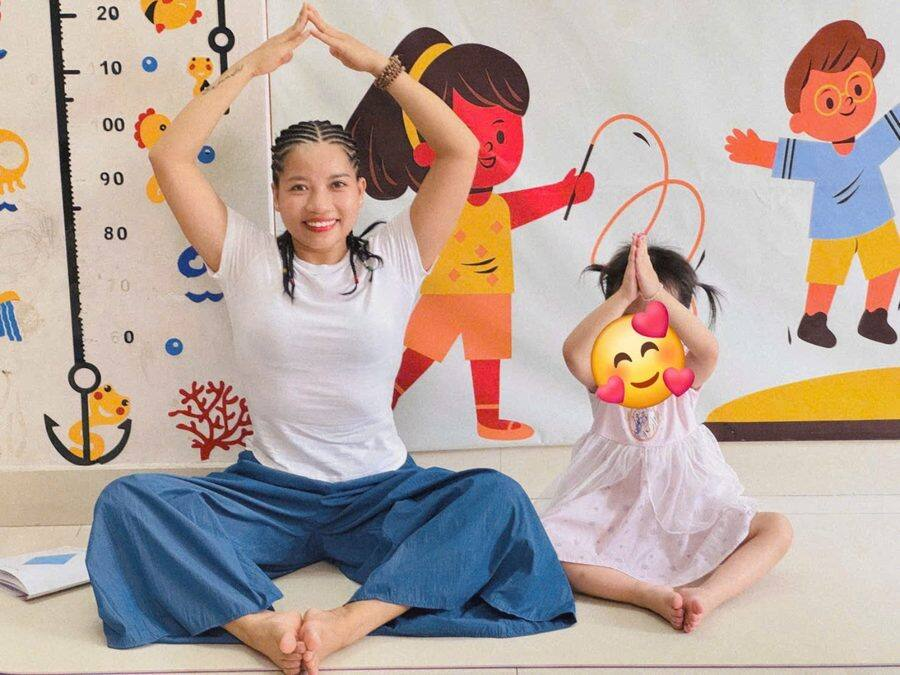

Chánh niệm
Ứng dụng yoga cân bằng phục hồi cho bé hay cáu giận, khóc nhè, lo lắng: giúp con gọi tên và làm dịu cảm xúc
Con ném đồ chơi. Con nằm lăn ra sàn. Con khóc mà không nói được vì sao. Hoặc con ôm chặt chân mẹ ở cổng trường, mặt tái đi.
Bố mẹ nào cũng từng đứng giữa những lúc như vậy. Thương con. Mà cũng mệt, cũng bối rối, có khi cũng nổi nóng theo.
Cô dạy yoga cho trẻ em đã lâu. Lớp nào cũng có những bạn như thế. Và cô nhận ra một điều giản dị: cảm xúc của con không cần bị dập đi. Nó cần được nhìn thấy, được gọi tên, rồi được thở cho qua.
Vì sao con dễ “bùng nổ” đến thế?
Con không hư. Bộ não của con đang lớn.
Phần não giúp người lớn dừng lại, suy nghĩ, chọn cách phản ứng (vùng vỏ não trước trán) phát triển rất chậm, tới tận tuổi hai mươi mấy mới hoàn thiện. Còn phần não báo động, nơi nảy ra sợ hãi và giận dữ, thì đã chạy rất nhanh từ khi con còn bé xíu.
Bác sĩ tâm thần Daniel Siegel và nhà trị liệu Tina Payne Bryson, trong cuốn sách nuôi dạy con bán chạy The Whole-Brain Child (2011), có một cách nói dễ nhớ: lúc con lên cơn, phần “não trên” như bị bật nắp, chỉ còn “não dưới” điều khiển. Khi ấy giảng giải gì con cũng không nghe được. Phải giúp con dịu lại trước, rồi mới nói chuyện sau.
Cũng hai tác giả này có một câu cô rất thích: “Name it to tame it”. Gọi được tên thì thuần được nó.
Câu ấy không chỉ là một khẩu hiệu. Năm 2007, nhóm của nhà khoa học Matthew Lieberman (Đại học California, Los Angeles) cho người tham gia xem ảnh những gương mặt đang giận, đang sợ, rồi chụp não họ (nghiên cứu đăng trên tạp chí Psychological Science). Khi người ta chỉ cần chọn một chữ gọi tên cảm xúc, như “giận” hay “sợ”, vùng hạch hạnh nhân, trung tâm báo động của não, hoạt động yếu đi. Gọi tên là đã bắt đầu dịu.
Còn hơi thở? Thở ra chậm và dài hơn hít vào giúp cơ thể chuyển sang chế độ nghỉ ngơi. Tim đập chậm lại. Vai hạ xuống. Người lớn hay trẻ con đều vậy. Chỉ là với trẻ con, mình phải biến nó thành trò chơi.
Ba bước cô dùng ở lớp: Dừng, Gọi tên, Thở
Không có gì cao siêu. Ba bước nhỏ, lặp đi lặp lại, cho tới khi con tự làm được.
✋ 1. Dừng
Cô ngồi xuống ngang tầm mắt con. Không giảng, không hỏi “tại sao”. Chỉ cần có mặt. Nếu con đang đánh bạn hay ném đồ, cô nhẹ nhàng giữ tay con: “Cô không để con làm đau bạn. Cô ở đây.”
🏷 2. Gọi tên
Cô đoán giúp con: “Con đang giận vì bạn lấy mất khối gỗ, phải không?” “Con đang sợ, vì chỗ này lạ quá.” Đoán sai cũng không sao. Con sẽ sửa: “Không phải giận, con buồn!” Thế là con đã tự gọi tên được rồi.
🌬 3. Thở
Lúc này mới thở. Một trong tám bài bên dưới, tùy con đang ở cảm xúc nào. Cô thở cùng con, không đứng nhìn con thở.
Trò chơi “Thời tiết trong lòng”
Đây là trò cô hay chơi đầu buổi, khi các con còn bình yên. Bởi muốn con gọi được tên cảm xúc lúc giông bão, con phải tập lúc trời quang trước đã.
Cô hỏi: “Hôm nay trong lòng con thời tiết thế nào?”
- ☀️ Nắng: con vui, con thấy nhẹ.
- ⛅ Có mây: con hơi buồn, hơi mệt, chưa biết sao.
- 🌧 Mưa: con buồn, con muốn khóc.
- ⛈ Giông: con giận, con muốn hét.
- 🌫 Sương mù: con lo, con sợ, không nhìn rõ phía trước.
Con chỉ lên tấm thẻ, hoặc làm động tác: giơ tay tỏa nắng, ngón tay rơi lả tả làm mưa, dậm chân làm sấm. Không có thời tiết nào xấu. Mưa rồi sẽ tạnh. Giông rồi sẽ qua. Câu này cô nói đi nói lại, nhiều tới mức các con nói trước cô.
Dần dần, lúc đang khóc, có bạn sẽ tự nói: “Con đang mưa.” Đó là lúc cô thấy mình được trả công.
8 bài thở, tư thế và trò chơi làm dịu cảm xúc
Mỗi bài hợp với một kiểu cảm xúc. Không cần tập hết. Chọn hai, ba bài con thích, tập lúc vui, để lúc khó con đã quen. Ảnh từ lớp học thật, khuôn mặt các bé được che để bảo vệ các con.
-
 1
1Tư thế em bé: về tổ
Khi nào: Khi con khóc, con thu mình, con không muốn ai chạm vào.
Cách làm: Quỳ, ngồi lên gót chân. Cúi người về trước, trán chạm thảm hoặc chạm gối ôm. Hai tay duỗi ra trước hoặc xuôi theo người. Cô nói nhỏ: “Con về tổ rồi. Thở cho bụng chạm vào đùi nhé.” Ở đó bao lâu cũng được.
Điều cô để ý: Trán chạm đất làm cơ thể chậm lại rất nhanh. Cô đặt một bàn tay lên lưng con, không xoa, không vỗ. Chỉ để đó. Có bạn nằm im năm phút rồi tự ngồi dậy, mắt đã khô.
-
🦁Hơi thở sư tử2
Sư tử gầm: cho cơn giận ra ngoài
Khi nào: Khi con đang tức, nắm tay siết chặt, muốn hét.
Cách làm: Quỳ, hai tay chống lên gối, các ngón tay xòe ra như móng sư tử. Hít vào thật sâu bằng mũi. Há miệng to, thè lưỡi ra, mắt nhìn lên, thở ra một tiếng “Haaaa” dài. Làm 3 lần. Lần cuối nhỏ dần, như sư tử đã no.
Điều cô để ý: Cơn giận cần một lối ra. Thay vì bảo con “im đi”, cô cho con gầm. Gầm đến lần thứ ba là con bắt đầu cười. Cơn giận đổi hướng. Ở lớp đông, cô cho cả lớp làm sư tử cùng, để bạn đang giận không thấy mình bị nhìn.
-
🌸Ngửi hoa, thổi nến3
Ngửi hoa, thổi nến
Khi nào: Khi con thở gấp, nức nở, nói không thành câu.
Cách làm: Giơ một ngón tay lên làm bông hoa. Hít vào bằng mũi, chậm, như ngửi hoa. Rồi ngón tay thành ngọn nến. Thở ra bằng miệng, thật khẽ, cho ngọn nến lung lay mà không tắt. Làm 5 lần. Thở ra luôn dài hơn hít vào một chút.
Điều cô để ý: Bạn nhỏ chưa hiểu “con thở chậm lại đi”. Nhưng ngửi hoa và thổi nến thì bạn nào cũng biết. Cô làm cùng con, mắt nhìn con, giọng thật chậm.
-
 4
4Quả bóng thở
Khi nào: Khi con lo lắng, bồn chồn, sắp vào lớp mới, sắp đi khám.
Cách làm: Hai tay cầm quả bóng thở (bóng nhựa co giãn), hoặc chụm mười đầu ngón tay vào nhau trước ngực. Hít vào, kéo bóng nở to ra. Thở ra, bóng thu nhỏ lại. Mắt nhìn theo quả bóng. 5 đến 8 hơi.
Điều cô để ý: Mắt có chỗ để nhìn thì đầu bớt chạy lung tung. Con lo thường thở bằng ngực, nhanh và nông. Quả bóng giúp hơi thở dài ra mà con không phải cố. Xem thêm Hơi thở bong bóng.
-
 5
5Ru gấu bông ngủ
Khi nào: Buổi tối, sau một ngày nhiều chuyện, con khó vào giấc.
Cách làm: Nằm ngửa, đặt một con gấu bông nhỏ lên bụng. Hít vào, bụng phồng lên, gấu được nâng lên. Thở ra, bụng xẹp xuống, gấu hạ xuống. “Mình ru gấu ngủ nhé. Nhẹ thôi, kẻo gấu thức.” 10 hơi.
Điều cô để ý: Con không còn để ý mình đang tập thở. Con đang chăm một bạn nhỏ hơn mình. Cảm giác được chăm cho ai đó làm con dịu đi. Cả bài có ở trang Yoga với gấu bông.
-
🐝Hơi thở con ong6
Con ong vo ve
Khi nào: Khi đầu con ồn ào, con nói liên tục, không nghe ai.
Cách làm: Ngồi thẳng. Hai ngón tay trỏ bịt nhẹ hai lỗ tai, hoặc hai bàn tay úp lên tai. Hít vào bằng mũi. Ngậm miệng, thở ra thành tiếng “ừmmmm” như con ong. Nghe tiếng ong trong đầu. 3 đến 5 lần.
Điều cô để ý: Tiếng ong rung nhẹ trong đầu, trong ngực. Các con thích lắm vì nghe được “âm thanh của chính mình”. Lớp đang ồn, cô làm ong một lần là cả lớp nhỏ tiếng theo. Người lớn có thể đọc thêm về thở ong Bhramari.
-
🌳Ngọn núi và cái cây7
Ngọn núi, rồi cái cây
Khi nào: Khi con mất bình tĩnh vì thua, vì làm hỏng, vì bị bạn trêu.
Cách làm: Đứng hai chân bằng hông, bàn chân ấn xuống đất. “Con là ngọn núi. Gió thổi mấy, núi vẫn đứng.” Thở 3 hơi. Rồi co một chân, bàn chân đặt vào bắp chân trụ, hai tay chắp trước ngực thành cái cây. Mắt nhìn một điểm. Thở 3 hơi, đổi chân.
Điều cô để ý: Thăng bằng thì không thể vừa giữ vừa giận. Cơ thể buộc phải chú ý. Cây đổ thì cười rồi trồng lại. Cô nói với con: “Cây nào cũng đổ vài lần. Cây vẫn là cây.”
-
🦋Cái ôm con bướm8
Cái ôm con bướm
Khi nào: Khi con sợ, con nhớ mẹ, con thấy một mình.
Cách làm: Bắt chéo hai tay trước ngực, bàn tay đặt lên hai bên vai hoặc dưới xương đòn, ngón cái móc vào nhau thành con bướm. Vỗ nhẹ, trái rồi phải, chậm như cánh bướm. Thở đều. Nhắm mắt nếu con muốn. Một phút.
Điều cô để ý: Đây là cái ôm con tự cho mình được, kể cả khi không có ai bên cạnh. Những ngày đầu đi học, xa mẹ lần đầu, bài này giúp được nhiều bạn nhỏ.
Khi người lớn ngồi cùng con

Có một điều cô học được, lâu rồi mới thấm. Trẻ con chưa tự làm dịu được mình. Con mượn sự bình tĩnh của người lớn ở gần. Giới tâm lý gọi là đồng điều hòa: hệ thần kinh của con “bắt nhịp” theo hệ thần kinh của mẹ, của cô.
Mẹ đang run, con run theo. Mẹ thở chậm, con cũng chậm dần. Không phải ngay lập tức. Nhưng có.
Nên trước khi giúp con thở, người lớn thở trước. Một hơi thôi. Hít vào. Thở ra thật dài. Rồi mới ngồi xuống bên con.
Vài điều nhỏ cô thấy có ích, ở lớp cũng như ở nhà:
- Ngồi thấp xuống. Đứng từ trên cao nhìn xuống, con thấy mình nhỏ bé và bị lấn át.
- Nói ít, nói chậm. Lúc con đang “bật nắp”, câu ngắn tốt hơn bài giảng. “Cô ở đây.” “Mẹ thấy con giận.” “Mình thở cùng nhau nhé.”
- Cho phép cảm xúc, giữ ranh giới cho hành vi. Con được giận. Con không được đánh bạn. Hai điều ấy nói cùng lúc được.
- Nói chuyện sau, khi đã yên. Lúc ấy mới hỏi: “Lúc nãy con thấy sao? Lần sau mình làm gì nhỉ?” Con nhớ bài học lúc bình yên tốt hơn nhiều.
- Có một góc bình yên. Một tấm thảm, vài cái gối, một con gấu bông, mấy tấm thẻ thời tiết. Không phải chỗ phạt. Là chỗ con tự đến khi cần, và mẹ có thể ngồi cùng.
Nhà tâm lý học John Gottman, sau nhiều năm quan sát các gia đình, viết trong cuốn Raising an Emotionally Intelligent Child (1997) rằng những đứa trẻ được cha mẹ công nhận cảm xúc và cùng tìm cách xử lý thường dễ tự trấn tĩnh hơn, kết bạn tốt hơn. Ông gọi những cha mẹ ấy là “huấn luyện viên cảm xúc” của con. Cô thấy cách gọi đó thật đẹp.
Điều cô thấy sau nhiều năm dạy
Yoga không làm con hết giận. Con vẫn sẽ khóc, vẫn sẽ hờn, vẫn có ngày giông bão. Như người lớn mình thôi.
Cái thay đổi là quãng thời gian từ lúc bão đến lúc tạnh. Ngắn dần. Và con bắt đầu có trong tay vài thứ của riêng mình: một hơi thở sư tử, một cái ôm con bướm, một chữ “con đang mưa”.
Với Sophia, yoga cho trẻ em chưa bao giờ chỉ là uốn dẻo. Là thân thể, là hơi thở, là cảm xúc, là mối nối giữa con với người lớn ở bên. Một buổi tập mà con được thương, được hiểu, con mang theo lâu hơn bất kỳ tư thế nào.
Vài điều cô hay để ý
- Tập lúc bình yên trước. Cô không chờ cơn giận mới dạy thở. Mỗi ngày vài phút, như một trò chơi, trước giờ ngủ hay sau giờ ăn nhẹ.
- Không dùng hơi thở như một hình phạt. “Ra góc kia thở đi!” nghe giống bị đuổi. Cô nói: “Mình ra góc bình yên cùng nhau nhé.”
- Không ép thở sâu. Thở mạnh, thở dồn dập có thể làm con chóng mặt. Chỉ cần thở ra chậm hơn hít vào một chút. Con thấy khó chịu thì dừng.
- Sư tử gầm dành cho lúc giận, không dành cho lúc con lo. Con đang sợ thì chọn bài êm: bóng thở, ôm con bướm, em bé.
- Khi nào nên hỏi chuyên gia. Nếu con bùng nổ gần như mỗi ngày, kéo dài nhiều tuần, con hay tự làm đau mình hay người khác, con mất ngủ, bỏ ăn, hoặc lo sợ tới mức không dám đến trường, bố mẹ nên đưa con đi gặp bác sĩ nhi hoặc chuyên gia tâm lý trẻ em. Yoga đi cùng, không thay thế.
🌟 Điều các con mang về
Svadhyaya là hiểu chính mình. Con biết hôm nay trong lòng mình đang nắng hay đang mưa.
Ahimsa là không làm tổn thương. Con được giận, nhưng con học cách để cơn giận đi ra mà không làm đau ai, kể cả chính mình.
Giông rồi sẽ qua. Mình ngồi đây với con, thở cùng con, cho tới khi trời quang.
🌿 Thầy cô muốn dẫn cả lớp đi qua những cơn giông?
Cách đọc cảm xúc của một lớp đông, chọn bài thở cho từng lứa tuổi, xử lý khi một bạn khóc giữa giờ mà cả lớp vẫn yên… cô hướng dẫn kỹ trong khóa Đào tạo Huấn luyện viên Yoga trẻ em. Bố mẹ muốn con được học ở lớp cô thì nhắn cô hỏi lịch nhé.
Đọc thêm: 10 phút massage cuối buổi và Yoga với gấu bông. Bố mẹ cũng đang căng thẳng? Có bài Ứng dụng yoga cân bằng phục hồi cho người căng thẳng, lo âu dành cho người lớn.